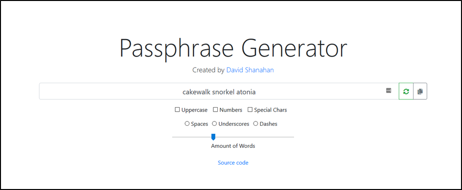

We all know passwords are difficult to get right; you have to remember an obsurdly complex password to be invulnerable to attack. But then you realise your efforts have to be magnified. Not only do you have to remember an obsurdly complex password, but you also have to remember a different obsurdly complex password for EVERY system you use.
Let’s pretend the following passwords are for your work email, your Google account, and your Facebook account:
- 4Q0i#T^YVACrra5B9!Bq
- d7G1*Pw9w#ISsIMiZRMr
- 86Sf$OUZVfsnW#ah3p
The passwords listed above adhere to the conventional wisdom of password complexity rules. They contain numbers and special characters; a mix of upper and lowercase characters; and have a good length at 20 characters.
But, good luck trying remember them. I’ll give you 5 seconds, try your best to remember them then open a new tab and try to type each of them out. I’m willing to bet my right kidney that you couldn’t even remember one of them. So why do we fool ourselves into thinking this is achievable?
In reality, we don’t. It’s more likely your passwords are a single word, such as a favourite sports team, musician, or celebrity, with the least amount of changes applied to meet the password complexity requirements: Liverpool89!
This is a classic case of userbility vs security: enforcing these password complexity rules does boost security but users won’t play along. They’ll end up creating a password that isn’t random; they’ll write it down; or they’ll reuse the same password on different systems. The most secure solution isn’t always the best solution.
The answer to this problem is to use a password manager. A password manager is a secure place for you to store and retrieve your passwords. All you need to do is remember one master password and you’re all good!
There’s plenty of password managers out there, but I personally use LastPass. For my desktop machine, I installed their browser plugin and on my Android device I installed their mobile application. When logging into an application, LastPass either autocompletes the credential fields, or I open the LastPass application and copy and paste the credentials.
However, there can be problems with this approach. For instance, if you arrive in the office and go to login to your computer. Obviously, you can’t load up your password manager to automatically authenticate you. If you’re password manager has a mobile application, you could use that. Although, as it’s not automated, it could cause headaches having to manually fill in a long, complex, random password every time you want to authenticate with the machine.
To solve this problem, the Nation Cyber Security Centre (NCSC) now recommend that people implement passphrases using the three words. Passphrases are easy to remember as they help paint a picture for our mind. XKCD did a great comic strip of this.
Anyways, the purpose of this post was the following:
Password managers have a password generator tool, but I can’t find one for passphrases…
So, I decided to make an opensource one in JavaScript.
